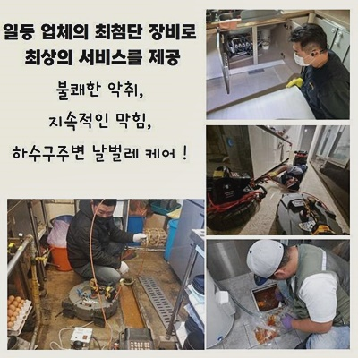
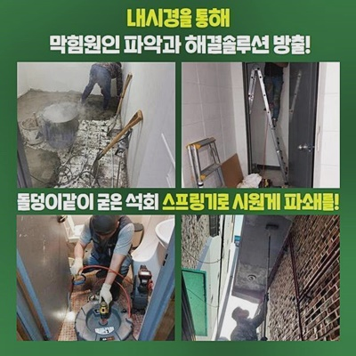
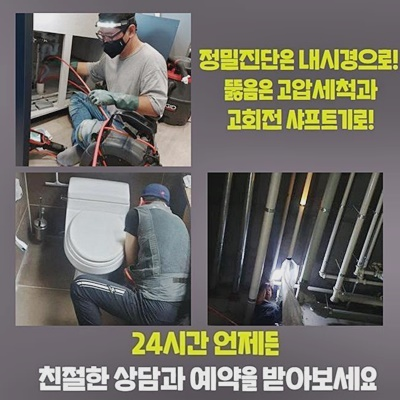
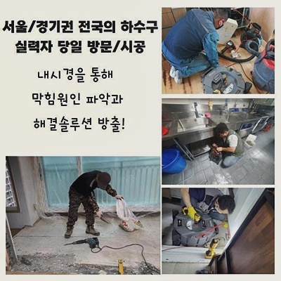
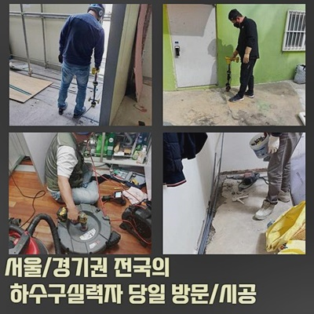

🏠 성남 도촌동세탁실역류 하대원동 하수구뚫어주는곳 배관뚫는업체
용인시 처인구 배관막힘 전문 시공 후기

📋 작업 개요
- 위치: 용인시 처인구, 수원시 영통구, 화성시 동탄
- 서비스 유형: 배관막힘, 하수구청소, 고압세척, 내시경점검
- 작업 일시:
- 업체명: 하수구수사대 (010-5615-2118)
🔍 문제 상황
성남 도촌동세탁실역류 하대원동 하수구뚫어주는곳 배관뚫는업체
평화로은 일상생활중에 느닷없이 하수파이프가 차단된다면 당황할수밖에 없죠
이번 글에서는 하수관에 이상이 생긴다면 해볼만한 방안들을 공유할 예정이니 기억해두시면 도움이 되실겁니다
식자재를 취급하는 음식점 주방에 문제가 발생하면 그 시점부터 식사까지도 알맞은 시각에 먹을 수 없으니 굶어야할 판입니다
더구나 더러운 폐수가 역류하며 역한냄새까지 퍼지면서 불편하다면 가능한 빨리 막힘상황을 해결하고자 조치를 취합니다
의도는 바람직하지만 우리 전문팀은 일반인에 관점에서 하수관 세척을 완벽하게 완수하는 것은 어려운 것으로 설명드립니다
실내 배수물이 넘쳐흐른 상황들에 다다랐다면 분명히 배수관 내부에 기름덩어리와 각종 잔류성분들이 섞인상황이라 고급 기기 이용이 불가피한 경우가 많습니다
하수도막힘을 수리한 현장도 같은 모습을 보였죠
화장실 바닥 가득 하수가 쏟아져나왔고 불쾌한냄새도 대단히 심하여 힘들다고 하셨습니다
소량의 물길을 열어보려고 철사와 막대기를 이용하여 혼자힘으로 시도를 해봤지만 파손된 배수파이프가 역류하게 되면서 밑바닥으로 물기가 흡수된 상태가 되어 굉장히 긴급하다고 하였습니다
서둘러 방문하여 문제 위치를 점검해보니 여기저기 엉망인 상태로 파악되었고 오염된 물에다가 이물질들까지 대량으로 흘러넘쳐 배수관 냄새또한 심하더라고요

🔎 원인 분석
💡 전문가 진단: 정밀 진단 장비를 사용하여 슬러지의 고착 여부를 판명하고 타격/세척 작업을 실시했습니다.
여러군데를 확인하면서 현황을 조사했는데 다행이 개수대 하부에 설치된 주름호스엔 이상이 나타나지는 않은것으로 판단되었습니다
스스로 뚫기를 시도하다가 하수관이 부서지는 경우가 때때로 생깁니다
육안으로 점검을 끝냈으니 가구 하부의 배수관에 흡입 장비를 투입해서 핵심 작업인 막힘 해결방안의 첫 과정을 진행했습니다
적용한 도구는 건식 방식이 아닌 잔여수분도 제거할 수 있는 성능이 내장되었기에 내부를 깔끔하게 만든 후 청소작업을 진행합니다
빼곡하게 남아있는 잔수들을 흡입하는 단계에서 불순물도 함께 배출되는 일이 있기도 합니다
높은 흡입 강도로 물기를 빨아들였지만 배수용기에 큰 불순물로 의심되는 물질이 발견되지 않았습니다
착수와 동시에 더러운 하수는 소거하였으니 다음 절차로 배수파이프 안에 전문 카메라기기를 들여보내 배관 내부 점검을 진행하였습니다
길게 뻗은 관 끝부분에 영상 기기가 탑재되어 협소하고 깜깜한 배수관이라도 막힘없이 여기저기 확인할 수 있습니다
내시경도구를 통하여 확인되는 붉은색의 물질들이 지방이 뭉쳐진것인데 이 기름뭉텅이인 슬러지들이 걸려있는 불결한 상황들이 보였습니다
더 안쪽으로 밀어 넣으니 매우 큰 부피의 오일 찌꺼기가 관찰되었어요
배수파이프의 통로만 비좁아진게 아니라 안을 가득 채운 오염된원인이 존재했습니다
막힘현상을 일으킨 주요원인을 발견했으므로 파악한 내용과 청소작업 절차를 말씀드리고 일을 추진하게 됩니다

🔧 작업 과정
튜브를 당겨 내시경장비를 회수했더니 끈적이는 기름잔여물들이 기기 외측에 달라붙어 고약한 악취가 퍼지고 있었어요
더러움의 수준이 심각했다는 의미이니 추측해 보건데 보통때 곰팡이균이 계속하여 생긴다거나 지속적인 악취 때문에 어려움도 있으실거라 생각되었습니다
파이프 안쪽을 깨끗하게 조치한다면 이런문제까지도 극복할 수 있습니다
끈적하게 묻어나온 슬러지들을 헝겊으로 치워내고 재차 배수관속에 삽입하여 목표를 정하였습니다
음식잔여물이나 수세미조각같은 고형물들이 쌓여있다면 고리를 이용하는 스타일로 해결할 수 있었겠지만 슬러지덩어리가 막힘의 발생요인이니 회전이 가능한 샤프트장치의 도움을 받아야 하는 경우였습니다
플렉스 샤프트장비는 하수관에 굳어진 슬러지나 이물질들을 잘게 쪼개어 배관밖으로 배출하는데 큰 도움이 되는 기기입니다
끝자락에 헤드지점이 쇠사슬과 같이 단단하기에 찐득거리는 지방을 부수는 작업도 효과적으로 해냅니다
가정내의 하수관 막힘 이유가 잔존 오일이라면 언제나 운용하는 도구중 하나에 포함됩니다
안을 비디오로 녹화하여 차단이 된 구간을 분명하게 보면서 차례로 정리작업을 진행했습니다
잔여물을 섬세하게 나누어 분쇄해주는 절차가 끝나면 석션기기를 투입해 흡입하여 들어올리면서 청결한 배수관으로 바뀌는 모습이었습니다
잘게 분쇄된 덩어리들을 압력을 주며 아래로 보내버리면 하부에 누적되어서 처리하기 난해한 사태까지 초래할지 모르니 작업의 자취는 흡입장비로 번거롭더라도 흡입하는 절차를 모든 현장에서 진행합니다
많은 사람들이 함께 쓰고 있는 광대한 하수 처리설비에 불순물로 발생한 문제가 일어나면 처리해야할 양이 굉장하게 많으니 압력으로 해결하는 방법을 사용하게 됩니다
빌라 내부 하수구 문제점이 출현한 상황이라면 알아낸 주요요인들을 해결하는 것에 중점을 두고 청소를 진행합니다
꽤 번잡할 수 있어도 위생적으로 배관 안의 상황을 개선해둔다면 비슷한 문제로 시간들을 무의미하게 소모하지 않아도 돼요
이왕 수리를 진행하는 김에 철저하게 수행해서 문제요인은 물론이고 미래의 상황 예측까지 전체적으로 관리하는게 하수도 정비전문인의 책임이라고 생각하고 있습니다
싱크대 하수구 수리를 모두 끝낸다음 작업구역을 다시 점검하니 맑은 상태의 물이 흐르고 있다는 것을 알아챘습니다
붉은 오염원들이 남겨지지 않고 싹 빼서 치워버렸으니 동일한 문제 상황들이 다시 생길 확률들이 미미하다고 추측됩니다
눈으로 현상을 파악하고나면 실질적 향상을 확인하고자 유량 확인 점검을 실행하였습니다
우리가 놓친 작동 불량이나 막힘 위치가 남아있을 수도 있으니 물을 가득부어 하수관 속으로 흘려넣었어요


✅ 작업 완료
다행스럽게도 매끄럽고 원활히 흐르기에 이번 작업이 순조로움을 안심하게 되었어요
여러가지 소품들로 대충 도전해보다간 파이프가 부서져서 크나큰 피해가 생길수 있기 때문에 하수구 복구 기술자를 찾아보고 문의하신 후 어려움을 해결하시기를 권장하여드립니다
하수관 관련 문제는 신속한 대응이 반드시 필요한데 대한민국 어디서든 한시간 이내에 방문할 수 있어서 불안감을 느끼지 않으셔도 됩니다
추가로 명백한 요금 계산으로 경제적 부담 또한 소통을 통해 경감하기위해 애쓰니 불필요한 염려는 덜고 문의주신다면 서둘러 찾아뵙겠습니다
철저한 검토를 기반으로 아주 청결한 배수구관리를 완료하여 기대에 부응하겠습니다


⚠️ 하수구 배관 막힘 예방 및 관리 가이드
- ✅ 머리카락, 비닐, 물티슈 등 물에 분해되지 않는 이물질은 절대 흘려보내지 마세요.
- ✅ 기름기 많은 식기는 설거지 전 키친타올로 먼저 기름때를 닦아내세요.
- ✅ 주기적으로 배수구에 뜨거운 물을 가득 부어주어 유지방 고착을 방지하세요.
- ✅ 작업 후 1년 이내 재발 시 무상 A/S 보증 서비스를 제공합니다.
💡 핵심 정리
- 확실한 장비 작업(내시경 점검 및 샤프트 스케일링)으로 원인을 뿌리 뽑습니다.
- 작업 후 1년 이내에 동일한 부위 재발 시 100% 무상 A/S 서비스를 보장합니다.
- 서울 · 경기 · 인천 전 지역에 24시간 언제든 긴급 출동할 수 있도록 항시 대기 중입니다.
❓ 자주 묻는 질문 (FAQ)
🚨 용인시 처인구 배관막힘 문제로 고민이신가요?
정확한 원인 진단과 확실한 시공으로 재발 없는 해결을 약속드립니다.
24시간 긴급 출동 | 서울 · 경기 · 인천 전지역 | 1년 내 재발 시 무상 A/S